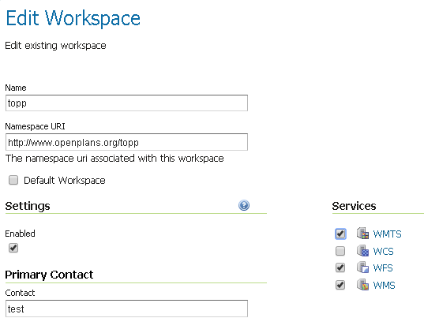
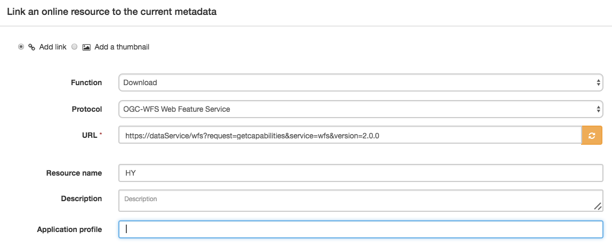

Падручнік па наладжванні службы загрузкі INSPIRE на аснове WFS з дапамогай GeoServer¶
This tutorial shows how one can set up a combination of GeoNetwork and GeoServer to provide download services following technical guidelines for download services.
Звярніце ўвагу, што тэхнічныя інструкцыі дазваляюць як Atom/OpenSearch, так і `WFS<http://www.opengeospatial.org/standards/wfs> `_. Гэты падручнік апісвае, як наладзіць службу загрузкі з дапамогай WFS.
Геасервер¶
Для падтрымкі мадэляў даных INSPIRE убудова geoserver `"appschema".<http://docs.geoserver.org/stable/en/user/data/app-schema/> `_ трэба ўсталяваць. Канфігурацыя падтрымкі схемы прыкладанняў у GeoServer не з'яўляецца мэтай гэтага падручніка. Падтрымка Appschema для INSPIRE добра задакументавана `Marcus Sen<https://data.gov.uk/sites/default/files/library/INSPIREWFSCookbook_v1.0.pdf> `_. Яшчэ адзін каштоўны рэсурс даступны ў `geosolutions<http://www.geo-solutions.it/blog/inspire-support-in-geoserver-made-easy-with-hale/> `_. У гэтым уроку мы спынімся на аспектах метаданых службы загрузкі WFS.
Спампуйце і ўсталюйце пашырэнне GeoServer INSPIRE, як апісана ва ўсталёўцы пашырэння Inspire<http://docs.geoserver.org/latest/en/user/extensions/inspire/installing.html> `_
Create at least one workspace per data model. On workspace properties activate "Settings" and set the selected service type (WFS).
У наладах WFS абярыце новую працоўную прастору і запоўніце форму (пакуль пакідайце URL-адрас метададзеных службы пустым), як апісана ў раздзеле «Выкарыстанне пашырэння Inspire»<http://docs.geoserver.org/latest/en/user/extensions/inspire/using.html#inspire-using> `_. Калі новай працоўнай вобласці няма ў расчыняецца меню, вярніцеся да папярэдняга кроку і пераканайцеся, што «Настройкі» актываваны для працоўнай вобласці. Калі палі INSPIRE не бачныя, пераканайцеся, што пашырэнне INSPIRE усталявана правільна.

Стварыце тыпы функцый у адпаведнасці з дакументацыяй па схеме прыкладання.
Геасетка¶
When deploying GeoNetwork, make sure the GEMET thesauri are loaded and activate the INSPIRE editor as described in inspire documentation.
У Адміністратар > Налады актывуйце пашырэнне INSPIRE.

Для кожнага набору дадзеных, які вы збіраецеся апублікаваць, стварыце запіс iso19115 з дапамогай шаблону INSPIRE. Звяжыце кожны запіс са службай загрузкі, створанай у геасерверы: напрыклад, https://{url}/geoserver/{workspace}/ows?request=getcapabilities&service=wfs&version=2.0.0
Стварыце камбайн OGC, які можа здабываць метаданыя для запісу службы (iso19119) з WFS. Запусціце камбайн і запішыце ідэнтыфікатар створаных метаданых службы.
Вярнуцца да GeoServer¶
Для кожнага ўзроўню дадайце URL метададзеных у канфігурацыю ўзроўню тыпу application/vnd.ogc.csw.GetRecordByIdResponse_xml.
У наладах WFS > працоўная вобласць INSPIRE дадайце спасылку на метаданыя службы. У адрозненне ад WMS, WFS не спасылаецца з тыпу прыкмет (узроўня) на метададзеныя, замест гэтага спасылкі на метададзеныя набору даных павінны быць дададзены як частка пашыраных магчымасцей INSPIRE.
Праверце рэалізацыю¶
Калі вы выкарыстоўваеце апісаныя вышэй налады ў Інтэрнэце, вы можаце выкарыстоўваць пілотны валідатар JRC INSPIRE<http://inspire-geoportal.ec.europa.eu/validator2/> `_. Калі вышэйзгаданая ўстаноўка працуе лакальна, вы можаце выкарыстоўваць `Esdin Test Framework<https://github.com/Geonovum/etf-test-projects-inspire> `_ для праверкі налад INSPIRE.

Частае выкананне тэсту падчас распрацоўкі дапамагае выявіць праблемы на ранняй стадыі.